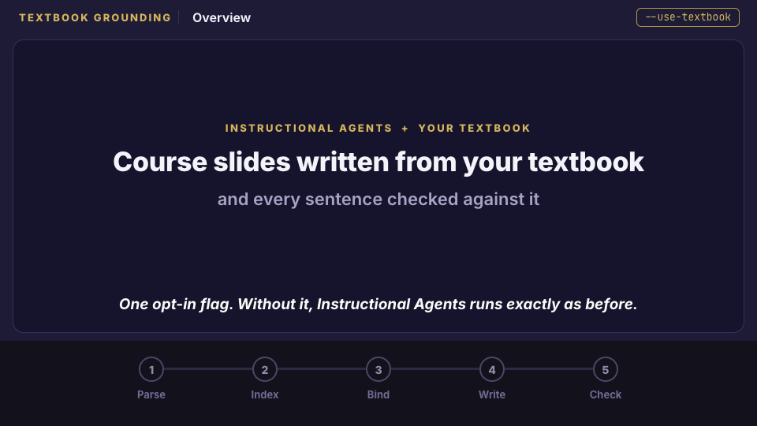
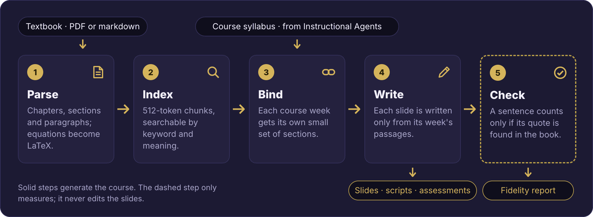
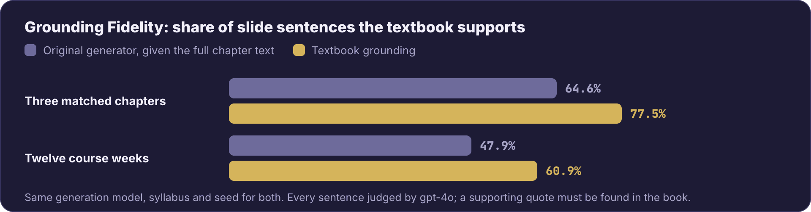
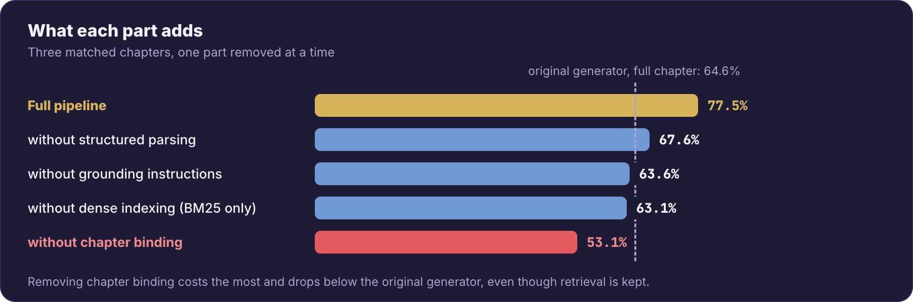
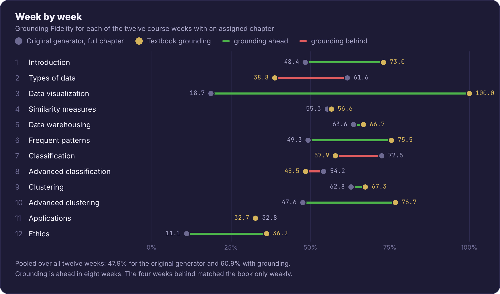

AI-Native Academia Workshop at NeurIPS 2026 (Poster)
This work extends Instructional Agents (EACL 2026), a multi-agent framework that generates a full course: syllabus, slides, lecture scripts and assessments.
It adds an opt-in textbook mode. With --use-textbook PATH, every slide is written from passages of the instructor's textbook, and every slide sentence is checked against that book.
Without the flag, Instructional Agents runs as before.

Instructional Agents writes a course from the language model's own knowledge. A course taught from a textbook should instead say what that book says, and the instructor should be able to check it. Placing the whole chapter in the prompt does not solve this: much of what the model writes is still absent from the book. Controlling which passages the model sees works better.

text-embedding-3-large). Reciprocal rank fusion combines the two rankings.We measure Grounding Fidelity: the share of slide sentences that the textbook supports. On three matched chapters, textbook grounding reaches 77.5%, compared with 64.6% for the original generator given the full chapter text. Across twelve course weeks, it reaches 60.9% versus 47.9%.

Removing one component at a time on the three matched chapters lowers fidelity in every case. Chapter binding matters most: without it, fidelity falls from 77.5% to 53.1%, below the 64.6% of the original generator with the full chapter. Removing structured parsing, grounding instructions or dense indexing gives 67.6%, 63.6% and 63.1%.

Grounding is ahead of the original generator in eight of the twelve weeks. The automated judge agrees with majority human labels on 90.8% of decidable claims. Fidelity measures precision, not coverage: it reports how much of what was written the book supports, not how much of the book was taught.

git clone -b feature/textbook-grounding https://github.com/DaRL-GenAI/instructional_agents.git
cd instructional_agents
pip install -e ".[grounding]"
export OPENAI_API_KEY=your_api_key_here
# Generate a course from your textbook
python run.py "Data Mining" --catalog default_catalog --exp dm_grounded \
--use-textbook path/to/textbook.pdf
# Score it, including the course-level Grounding Fidelity %
python evaluate.py --exp dm_grounded --rigorous
Bring your own PDF or markdown textbook; none ships with the repository.
Each chapter's output includes a Beamer deck with textbook figures, a speaker script, an assessment, and content_verification.json, which lists every sentence as supported (with its quote) or flagged.
See the README for all options.
A BibTeX entry for this paper will be added with the camera-ready version. Please also cite Instructional Agents, which this work builds on:
@misc{yao2025instructionalagentsllmagents,
title={Instructional Agents: Reducing Teaching Faculty Workload through Multi-Agent Instructional Design},
author={Yao, Huaiyuan and Xu, Wanpeng and Turnau, Justin and Kellam, Nadia and Wei, Hua},
year={2025},
eprint={2508.19611},
archivePrefix={arXiv},
primaryClass={cs.AI},
url={https://arxiv.org/abs/2508.19611},
}